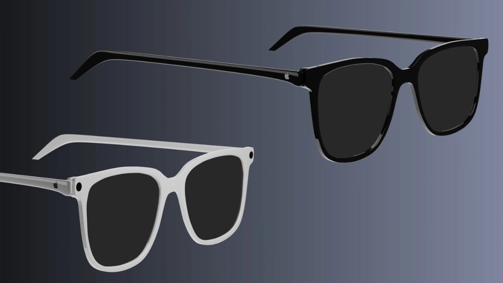

(Dân trí) - Các thông tin bị rò rỉ cho biết Apple sẽ gia nhập vào thị trường kính thông minh với mẫu kính thiết kế thời trang và những tính năng chưa từng có trên các sản phẩm khác.

Kính thông minh Apple được cho là sẽ có thiết kế thời trang, tích hợp camera và các tính năng AI (Ảnh: AppleInsider).
Sau loạt sản phẩm đã quá quen thuộc như iPhone, iPad hay Apple Watch… Apple đang loay hoay tìm cách chen chân vào một phân khúc thị trường mới.
Năm 2023, Apple ra mắt chiếc kính thực tế hỗn hợp Vision Pro, tạo nên một phân khúc sản phẩm hoàn toàn mới. Tuy nhiên, mức giá lên đến 3.499 USD cùng thiết kế có phần thô kệch và nặng của Vision Pro đã khiến sản phẩm không được người dùng đón nhận.
Trang công nghệ PhoneArena dẫn lời các nguồn tin thân cận Apple cho biết “quả táo” đã hủy bỏ dự án phát triển sản phẩm nâng cấp của Vision Pro, thay vào đó Apple sẽ phát triển kính thông minh với thiết kế thời trang, tích hợp các tính năng trí tuệ nhân tạo.
Theo hãng tin Bloomberg, kính thông minh của Apple sẽ giống những chiếc kính mắt thông thường, cho phép đeo hàng ngày. Hai bên gọng kính sẽ được tích hợp hai camera, bao gồm một camera để sử dụng cho chức năng quay phim, chụp ảnh và một camera để ghi nhận cử động của bàn tay người dùng, cho phép người dùng điều khiển kính bằng cử chỉ tay.
Đây được xem là tính năng chưa từng có trên bất kỳ mẫu kính thông minh nào khác. Trước đó Meta (công ty mẹ của Facebook) cũng trang bị tính năng điều khiển bằng cử chỉ tay lên chiếc kính thông minh của mình, tuy nhiên, người dùng vẫn cần phải mang một chiếc vòng đeo tay để ghi nhận các chuyển động của tay.
Tuy nhiên, giới công nghệ vẫn đang hoài nghi về tính năng này trên kính thông minh của Apple, bởi lẽ việc sử dụng camera để ghi nhận chính xác chuyển động của tay, sau đó chuyển đổi thành câu lệnh để điều khiển kính là điều không dễ dàng, nếu như không có sự trợ giúp của các loại cảm biến khác.
Nhiều khả năng Apple sẽ có một giải pháp nào đó để mang lên chiếc kính thông minh của mình tính năng đặc biệt để cạnh tranh với các đối thủ.
Ngoài ra, Apple cũng được cho là sẽ tích hợp trợ lý ảo Siri cũng như các tính năng thông minh vào chiếc kính thông minh của mình.
Các nguồn tin cho biết Apple đang phát triển hai mẫu kính thông minh khác nhau, bao gồm một phiên bản chỉ tích hợp camera và loa vào gọng kính, dự kiến ra mắt trong năm 2027, cùng một mẫu kính tích hợp cả màn hình nhỏ ở phần mắt kính để hiển thị thông tin, nhiều khả năng sẽ được ra mắt vào năm 2028.
Phân khúc kính thông minh được dự đoán sẽ trở nên sôi động và cạnh tranh khốc liệt trong thời gian tới. Ngoài Apple, Samsung cũng được cho là đang phát triển hai mẫu kính thông minh của riêng mình, bao gồm một mẫu kính có tích hợp màn hình LED. Samsung dự kiến sẽ ra mắt kính thông minh đầu tiên ngay trong năm nay.
Sự xuất hiện của các mẫu kính thông minh với thiết kế thời trang, tích hợp các tính năng AI của Samsung và Apple sẽ tạo nên sự cạnh tranh mạnh mẽ với các sản phẩm hiện có trên thị trường đến từ Meta và các thương hiệu Trung Quốc như Oppo, Vivo, Xiaomi…
BÌNH LUẬN